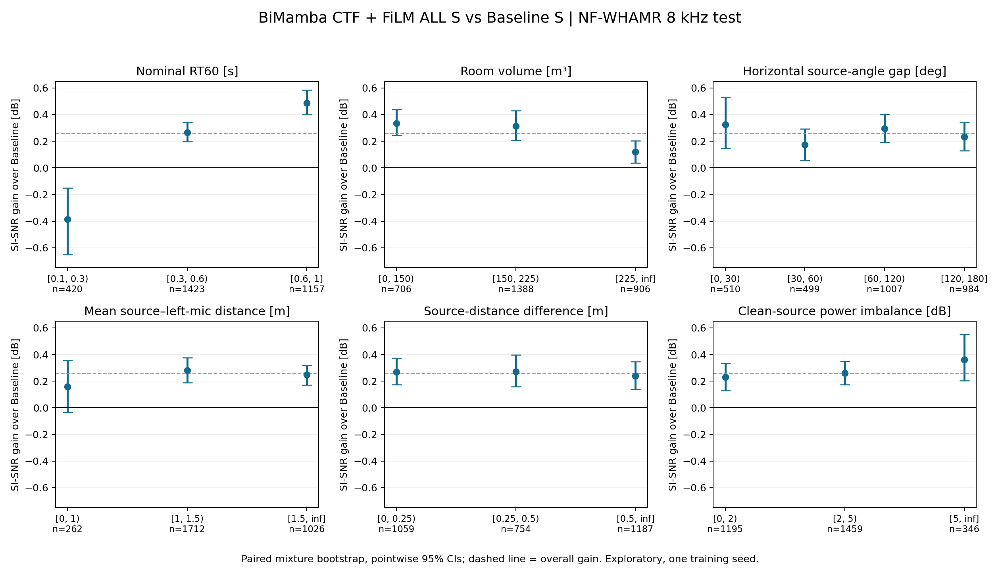
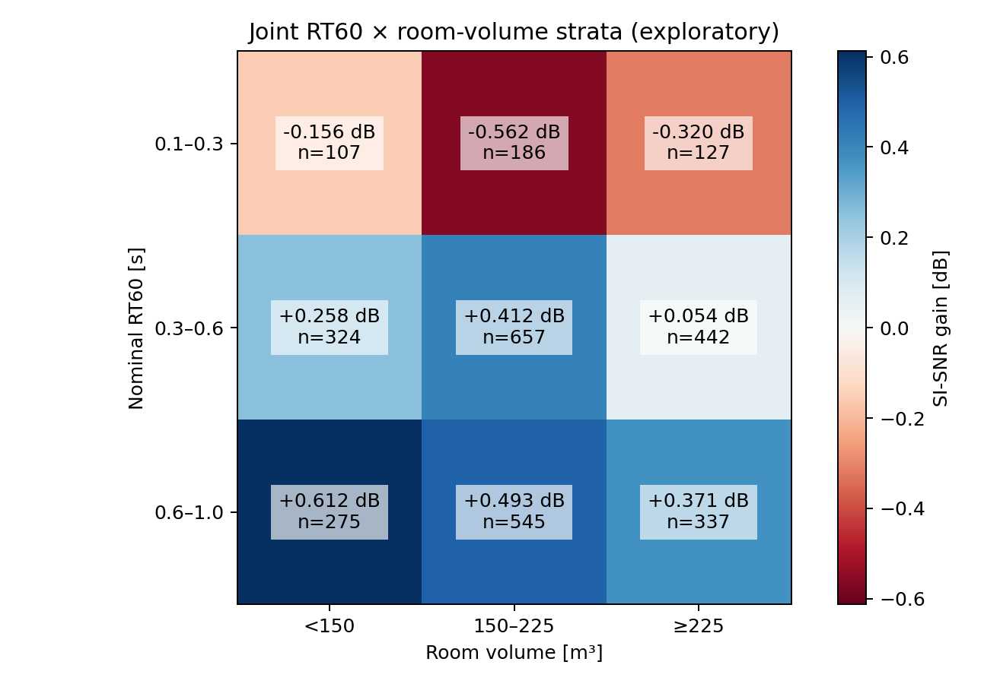

Baseline S vs BiMamba推定CTF・FiLM+ALL S：条件別評価
NF-WHAMR!・8 kHz・1ch・test 3,000混合音／6,000音源。モデル・seedは各1条件。指標はESPnetのSI_SNR（平均除去SI-SDRと同じ定義）。値は高いほど良い。
主な発見：低残響ではSI-SNRが悪化する一方、中～高残響では改善する。部屋体積が小さい群で改善が比較的大きい。DOA差・距離差では明確な連続的傾向は得られなかった。単一seedの探索的解析であり、因果的な説明・推定器精度の証明ではない。
全体
| 区間 | 混合音数 | Baseline | BiMamba | 差 [dB] | 差の95% CI | 改善率 | 上下1%除外の差 |
|---|
| All | 3,000 | 18.250 | 18.510 | +0.259 | [+0.197, +0.321] | 67.4% | +0.206 |
条件による改善量

Nominal RT60 [s]
| 区間 | 混合音数 | Baseline | BiMamba | 差 [dB] | 差の95% CI | 改善率 | 上下1%除外の差 |
|---|
| [0.1, 0.3) | 420 | 19.966 | 19.580 | -0.386 | [-0.653, -0.150] | 40.0% | -0.313 |
| [0.3, 0.6) | 1,423 | 18.972 | 19.237 | +0.266 | [+0.197, +0.343] | 65.0% | +0.175 |
| [0.6, 1] | 1,157 | 16.740 | 17.226 | +0.486 | [+0.400, +0.584] | 80.3% | +0.365 |
Room volume [m³]
| 区間 | 混合音数 | Baseline | BiMamba | 差 [dB] | 差の95% CI | 改善率 | 上下1%除外の差 |
|---|
| [0, 150) | 706 | 17.586 | 17.919 | +0.333 | [+0.245, +0.437] | 74.6% | +0.288 |
| [150, 225) | 1,388 | 18.241 | 18.554 | +0.314 | [+0.205, +0.428] | 67.0% | +0.250 |
| [225, inf] | 906 | 18.783 | 18.902 | +0.119 | [+0.038, +0.204] | 62.4% | +0.116 |
Horizontal source-angle gap [deg]
| 区間 | 混合音数 | Baseline | BiMamba | 差 [dB] | 差の95% CI | 改善率 | 上下1%除外の差 |
|---|
| [0, 30) | 510 | 18.282 | 18.606 | +0.324 | [+0.147, +0.527] | 67.1% | +0.229 |
| [30, 60) | 499 | 18.262 | 18.437 | +0.175 | [+0.057, +0.291] | 65.7% | +0.182 |
| [60, 120) | 1,007 | 18.159 | 18.453 | +0.294 | [+0.191, +0.401] | 69.1% | +0.221 |
| [120, 180] | 984 | 18.321 | 18.555 | +0.234 | [+0.127, +0.341] | 66.7% | +0.204 |
Mean source–left-mic distance [m]
| 区間 | 混合音数 | Baseline | BiMamba | 差 [dB] | 差の95% CI | 改善率 | 上下1%除外の差 |
|---|
| [0, 1) | 262 | 19.101 | 19.259 | +0.158 | [-0.034, +0.356] | 64.5% | +0.145 |
| [1, 1.5) | 1,712 | 18.400 | 18.682 | +0.282 | [+0.188, +0.376] | 66.9% | +0.206 |
| [1.5, inf] | 1,026 | 17.784 | 18.032 | +0.248 | [+0.172, +0.320] | 69.0% | +0.238 |
Source-distance difference [m]
| 区間 | 混合音数 | Baseline | BiMamba | 差 [dB] | 差の95% CI | 改善率 | 上下1%除外の差 |
|---|
| [0, 0.25) | 1,059 | 18.278 | 18.548 | +0.270 | [+0.173, +0.374] | 68.8% | +0.222 |
| [0.25, 0.5) | 754 | 18.355 | 18.628 | +0.274 | [+0.160, +0.396] | 65.3% | +0.199 |
| [0.5, inf] | 1,187 | 18.160 | 18.400 | +0.241 | [+0.138, +0.345] | 67.5% | +0.201 |
Distance between sources [m]
| 区間 | 混合音数 | Baseline | BiMamba | 差 [dB] | 差の95% CI | 改善率 | 上下1%除外の差 |
|---|
| [0, 1) | 553 | 18.494 | 18.723 | +0.229 | [+0.066, +0.401] | 63.7% | +0.182 |
| [1, 2) | 1,129 | 18.374 | 18.639 | +0.265 | [+0.179, +0.360] | 68.8% | +0.202 |
| [2, inf] | 1,318 | 18.042 | 18.310 | +0.268 | [+0.172, +0.362] | 67.8% | +0.222 |
Clean-source power imbalance [dB]
| 区間 | 混合音数 | Baseline | BiMamba | 差 [dB] | 差の95% CI | 改善率 | 上下1%除外の差 |
|---|
| [0, 2) | 1,195 | 18.313 | 18.543 | +0.230 | [+0.129, +0.334] | 67.9% | +0.191 |
| [2, 5) | 1,459 | 18.251 | 18.510 | +0.260 | [+0.174, +0.350] | 67.4% | +0.213 |
| [5, inf] | 346 | 18.033 | 18.393 | +0.360 | [+0.204, +0.551] | 65.6% | +0.256 |
Mixture duration [s]
| 区間 | 混合音数 | Baseline | BiMamba | 差 [dB] | 差の95% CI | 改善率 | 上下1%除外の差 |
|---|
| [0, 3) | 120 | 17.588 | 17.567 | -0.021 | [-0.333, +0.239] | 45.8% | +0.025 |
| [3, 5) | 928 | 18.077 | 18.327 | +0.250 | [+0.174, +0.336] | 64.8% | +0.183 |
| [5, inf] | 1,952 | 18.374 | 18.655 | +0.281 | [+0.200, +0.369] | 70.0% | +0.232 |
RT60と部屋体積を同時に分けた確認

高RT60群と低RT60群の改善量の差：+0.872 dB、95% CI [+0.604, +1.154]。各RT60群で上下1%の極端値を除いても、低残響で悪化・高残響で改善という符号は維持された。
他条件を同時に考慮した探索的回帰
目的変数は各混合音のSI-SNR差。RT60、log部屋体積、DOA差、平均距離、距離差、実測クリーン音量差、長さを標準化して同時投入。HC3頑健標準誤差、係数単位は1標準偏差当たりdB。7項目内のp値をBH補正。R²=0.026であり、個別utteranceの差の大部分はこのメタデータだけでは説明できない。
| 条件 | 係数 | 95% CI | BH q |
|---|
| rt60_s | +0.255 | [+0.178, +0.332] | 7.21e-10 |
| log_volume | -0.094 | [-0.146, -0.041] | 0.00158 |
| doa_separation_deg | -0.015 | [-0.080, +0.050] | 0.657 |
| mean_distance_m | +0.014 | [-0.042, +0.071] | 0.657 |
| distance_gap_m | -0.035 | [-0.107, +0.037] | 0.547 |
| power_imbalance_db | +0.026 | [-0.034, +0.087] | 0.547 |
| duration_s | +0.065 | [+0.005, +0.124] | 0.077 |
定義・限界
- RT60はCSVの生成指定T60。実測された各音源RIRのRT60ではない。
- 部屋体積はroom_x×room_y×room_z。距離は左micから音源への3次元距離。DOA差は左mic基準の水平音源角度差（0–180°）。monoモデルのため、角度別結果は空間配列手掛かり利用の証拠ではない。
- 2話者を各utterance内で平均してモデル差を計算。5,000回、seed0のpaired mixture bootstrap。区間は各群のpointwise 95%で、多重比較全体の同時区間ではない。学習seed間の不確実性は含まない。
- 区間は左閉右開、最終区間のみ右閉。thresholdは物理量の区切りであり、test性能を最大化する探索はしていない。全8条件を省略せず報告。
- 参照話者に整列済みの保存スコアを使用。キー集合・重複・有限値・メタデータ一意対応を全件検証。元の片側mic・clean参照から音量差と長さを算出。
- RT60・体積を同時に考慮しても傾向は残るが、CTF推定誤差・反射構造が原因かは未検証。次の確認は別seedとOracle/Random条件、同一音声でRT60のみ変える制御実験。
全条件集計CSV / utterance別CSV / 回帰CSV / 出所と検証情報